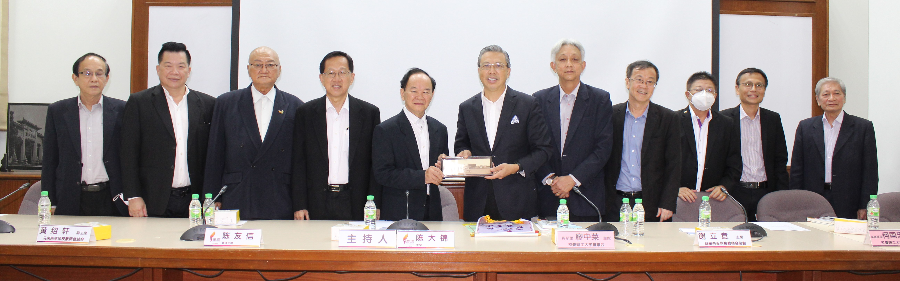

拉曼理工大学莅访董教总 探讨加强合作关系
廖中莱（左六）回赠纪念品予陈大锦（左五）与谢立意（右五）。左起为杨才国、杨安山、杨应俊、陈友信、陈大锦、廖中莱、谢立意、何国忠、王仕发、李仕伟、刘衍明。拉曼理工大学董事会主席丹斯里廖中莱于2022年7月8日率团莅访董教总，就拉曼大学学院升格为拉曼管理与工艺大学后，如何加强双方的合作关系进行交流。
董总主席陈大锦在致词时表示，董总目前的重大方针是推动独中教育发展与改革，从课程编撰、师资培训、考试评量到政策制定，董总已投入许多的资源，以让全国华文独中教育能够与时俱进。
陈主席表示，拉曼理工大学是独中生升学的选项之一，而且该校也积极向全国华文独中伸出援手，如让崇华独中的在籍生可直接修读拉曼理工大学烹饪艺术文凭课程学分，这有助于技职教育的发展。同时，拉曼理工大学也即将为新山宽柔中学开办第一届教育专业课程，而且有关课程更获得大马学术资格鉴定机构的承认，此课程与董总致力于提升独中师资教育专业的目标不谋而合。
教总主席谢立意指出，拉曼大学学院升格为拉曼理工大学，可说是重要的里程碑，该校自1969年成立以来，就为广大华裔子弟提供优质且实惠的高等教育，为国家培养了许多人才。同时该校的毕业生在职场上的表现也获得各界认可，赞誉有加。由此说明拉曼理工大学在办学上的成功，尤其是在推动华裔子弟接受高等教育方面，扮演了重要的角色。
谢主席相信在拉曼理工大学董事会和教学团队的努力下，将进一步提升该校的教学质量，并继续对国家长远发展作出更大的贡献。他希望该校在学费上继续维持低廉的收费，同时也提供更多援助，让家境清寒者也有机会接受优质的高等教。
拉曼理工大学董事会主席丹斯里廖中莱表示，今日到访主要是相互勉励，提升我国高等教育发展，并期待日后能与董教总开展密切的合作。此外，拉曼大学学院现已正式升格为拉曼理工大学，能有今日的成就，仰赖华社这53年以来的鼎力支持，同时也会持续提供低廉优质的高等教育，让贫寒家庭的孩子能继续升学。
他补充，拉曼理工大学成立了一个中小型企业中心，此中心其实是个服务单位，以配合中小型企业，解决其所面对的困难、问题、研发和培训的相关工作。
拉曼理工大学校长李仕伟教授也在交流会上汇报了该校未来10年的路线图，其中包括培育卓越的毕业生，与商业界建立合作关系，组建一支优质的教职员团队，提升学术人员技能，建立现代化学习与休闲场所，以及建设教学和科研设施等。同时，他希望往后可以加强董教总与拉曼理工大学双方的合作关系。与会者也针对该校的教育理念与运作，进行深入和实质的交流，提出反馈意见和建议，双方互动热烈。
其他与会者包括董总署理主席陈友信、副主席杨应俊、吴小铭、财政杨安山、副秘书长杨才国、中央委员李兆祥、何广福、执行长梁胜义、副执行长（总务处）兼资料与档案局局主任锺伟前、副执行长（学务处）兼教师教育局局主任曾庆方、秘书室主任江伟俊和会务与组织局局主任林纪松；教总副主席黄绍轩、方良妹、秘书长王仕发、财政王金忠、执行长叶翰杰和执行主任余裕忠；拉曼理工大学董事会副主席拿督斯里何国忠博士、教育信托基金会成员丹斯里刘衍明、副校长谢素娟教授、研发与商业化暨副校长骆翠凤博士、中小型企业中心主任张学川博士、企业传讯及营销处主任韦翡群、校友拿督陈添裕和王辉忠。